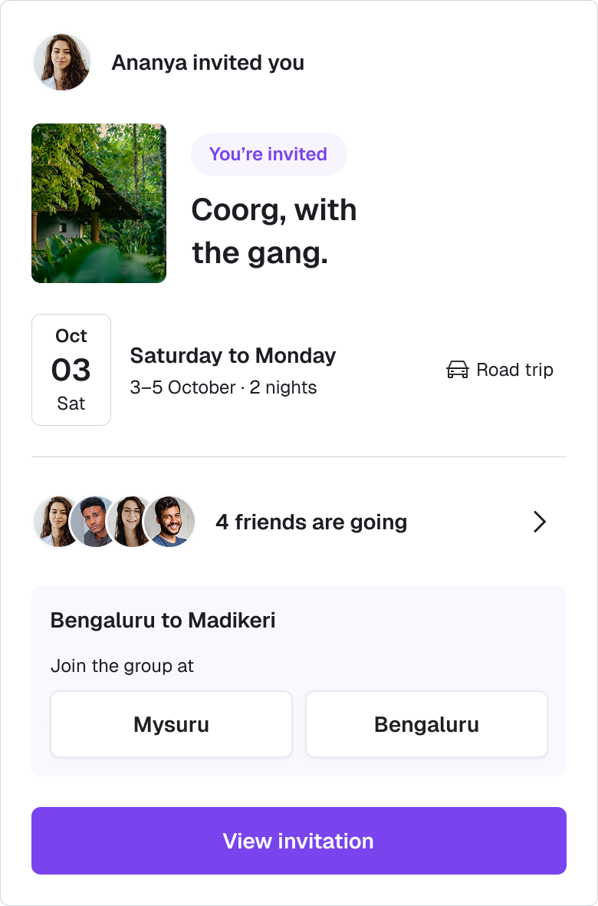
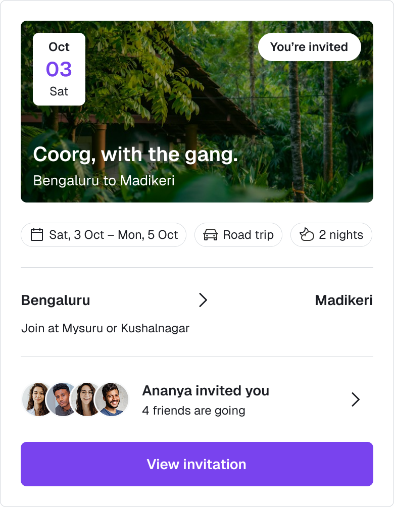
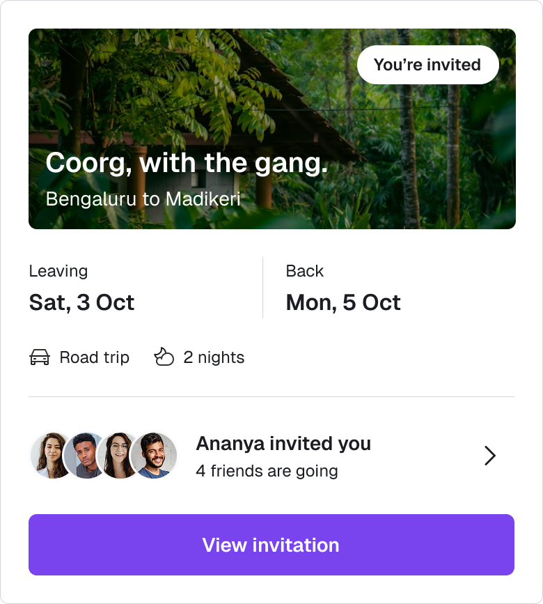
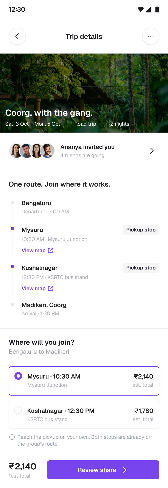
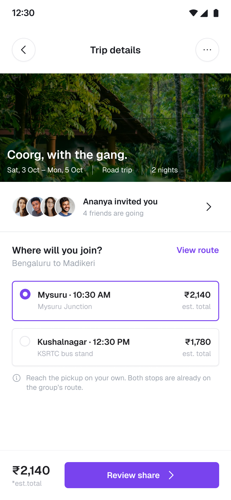
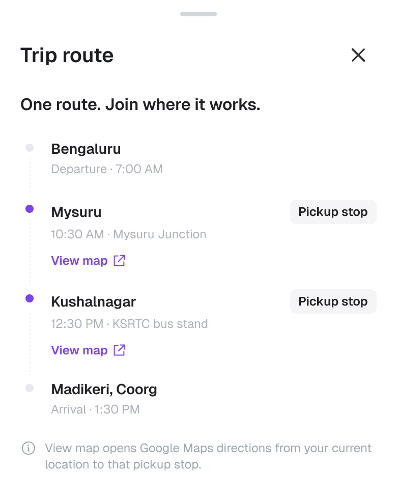
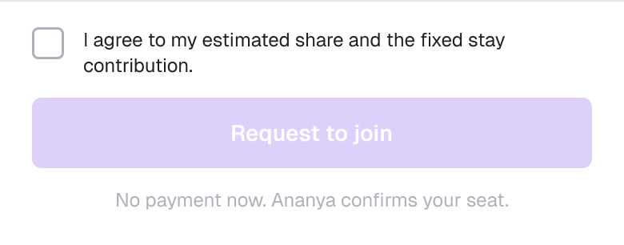
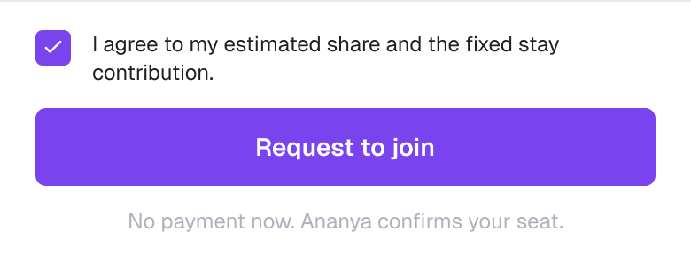
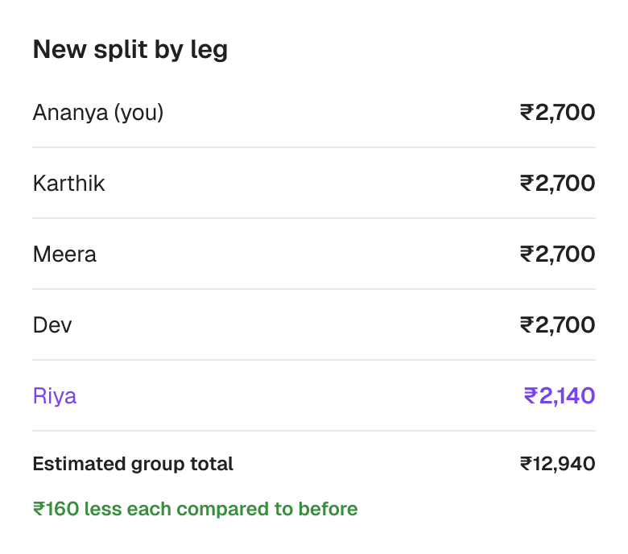

Joining part of a trip needs a complete agreement
The brief highlights a gap: group trips assume everyone travels together, while partial joiners coordinate in chat. Pickup, cost and confirmation become separate conversations. I focused on bringing those decisions into one joining flow.
Riya joins four friends on their Bengaluru–Madikeri trip at Mysuru or Kushalnagar. She needs to know where to meet and what she owes. Ananya, the organiser, needs to review the pickup and revised split before confirming her seat.
The rules that keep the split understandable
Three flows, including when plans change
The three flows on the Final UI page cover joining, withdrawing a request, and an organiser declining it.
Four choices that make joining easier to judge









A clear pickup, an agreed share, a confirmed seat
Try both pickup options, review the split, and switch to Ananya’s view to confirm or decline. The confirmed plan keeps the meeting point, time and map access together.
The limits of a focused first version
Measure confidence at each joining step
Three proposed targets cover completing a request, understanding the cost and knowing where the request stands.
Unassisted request completion
Invited joiners choose a pickup, review the share and send a request without help.
Correct cost understanding
Joiners explain their travel share, the excluded earlier leg and the fixed stay contribution.
Request status clarity
Joiners correctly identify whether their seat is pending, confirmed or declined, and know what to do next.